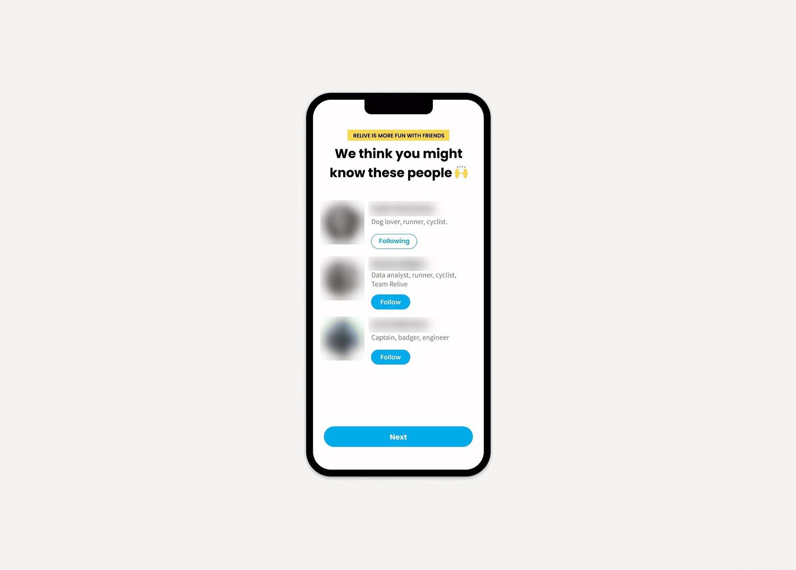
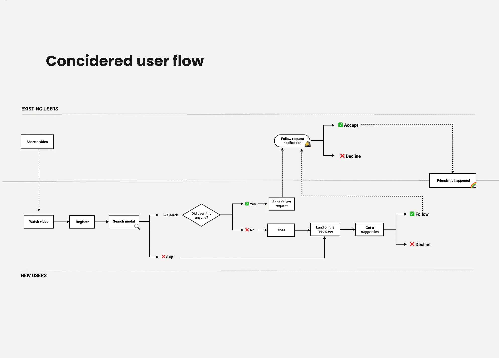
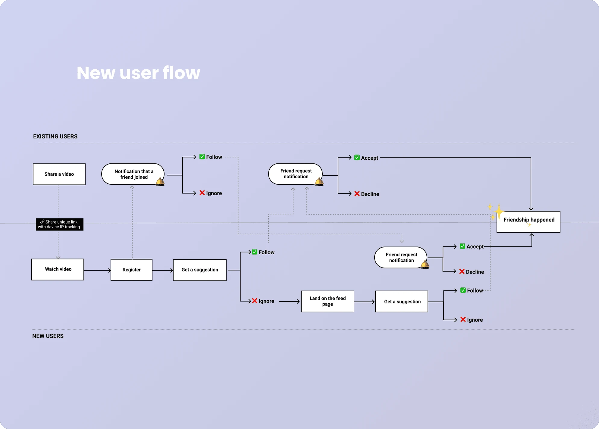
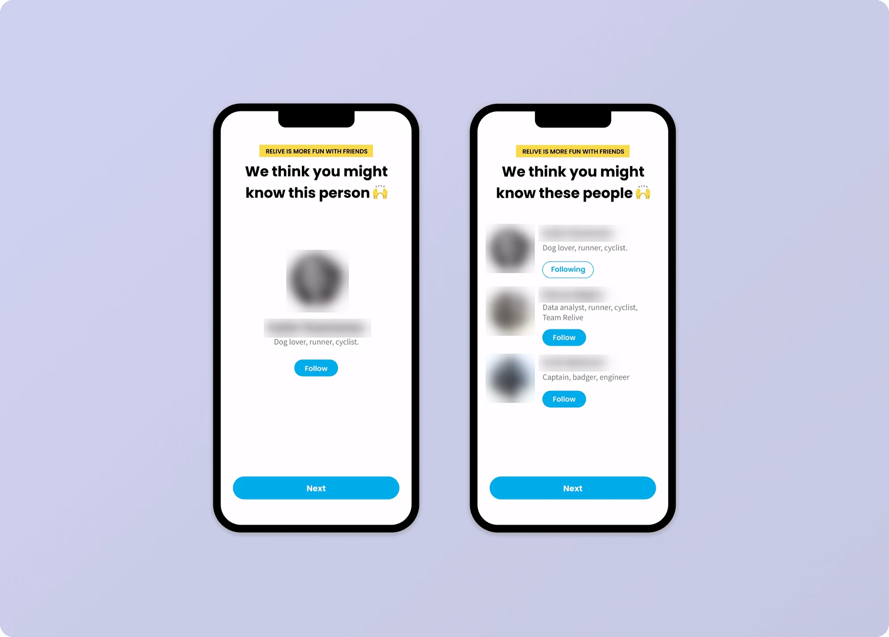

January 2021
Archive
A modal that made Relive social
Relive grows by word of mouth. Yet in research sessions we kept hearing that people who already knew someone on Relive when they joined couldn’t find them.

- Discipline
- Product design
- Company
- Relive
- Year
- 2021
- Timeline
- 2 weeks
01
Impact
- Users with at least 1 friend
- +37%
- Referrals
- +12%
- Activities recorded within 28 days
- +19%
It worked. More people had at least one friend, referrals went up, and so did the number of activities people recorded in their first 28 days.
02
Problem
People kept telling us Relive felt like a lonely place. They asked whether the app was new, or how to find their friends. It was a contradiction worth poking at.
Relive had grown to 15M users through word of mouth: people made a video and told friends and family about it. So I assumed new users already knew someone on Relive, but somehow struggled to connect.
Next, I needed to know whether the problem was worth solving.
03
What I did
The data showed that people who follow at least one person live very different lives on Relive: they are more active and go outdoors more often, they stay longer, and new users onboard faster with at least one friend.
I interviewed users who had friends on Relive to understand why. Friends keep each other accountable for staying active. That made it worth solving.
I looked for opportunities in the existing flow and considered several: asking people to search for friends during onboarding, matching their phone contacts, and tracking the links people share with their videos.

04
Solution
Link tracking needed zero effort from anyone, unlike the other options.
The idea was simple: when someone watches a shared video, we store their device IP for 30 days. If they join within those 30 days, they get a suggestion to follow the person who shared it.

